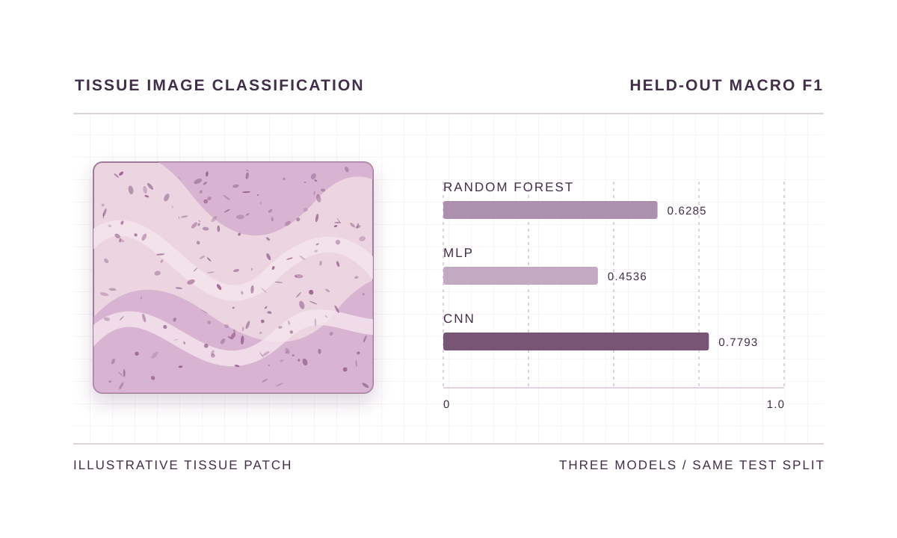
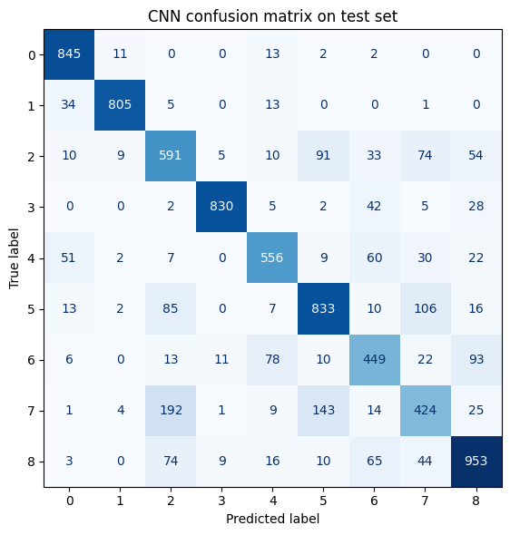

Reading Tissue Images.
How well do three different models classify the same small microscopy images?
My role. I prepared the PathMNIST data, implemented and tuned the models, and compared their predictions on a held-out test set.

01 / METHOD
One split, three models
Data and split. I used a coursework subset of PathMNIST with nine tissue classes. I normalised the images and made a stratified training and validation split. I kept the supplied test split separate from model selection and used it for the final comparison.
Model comparison. I compared Random Forest and a multilayer perceptron on flattened pixels with a convolutional network that kept the two-dimensional image layout. I used validation results to choose settings and reported macro F1 alongside accuracy so each class counted equally in the F1 summary.
02 / FINDINGS
The CNN performed best on this split
- CNN accuracy
- 78.58%
- CNN macro F1
- 0.7793
I used confusion matrices to see which tissue classes each model mixed up. This comparison used a single split and one random seed for the neural networks. Repeating the runs would help measure how much the scores vary.
